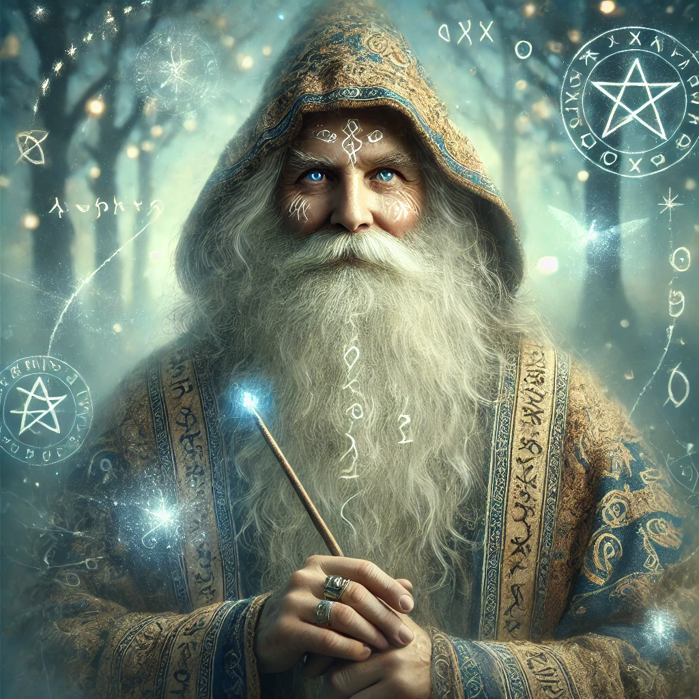

Merlin the Wise
Merlin, the legendary wizard of Arthurian lore, is a figure of immense wisdom, mystery, and magic. Known as Merlin the Wise, he is both mentor and protector to King Arthur, guiding him on his path to greatness. A master of ancient knowledge and mystical arts, Merlin is said to wield unparalleled magical powers, able to see the future and shape the fate of kingdoms
Merlin’s origins are shrouded in mystery, with tales describing him as a being born of both human and magical lineage. He is portrayed as a sage and an enchanter, living in harmony with nature and drawing his power from the forces of the earth. From orchestrating Arthur’s ascension to the throne by enabling him to draw Excalibur, to establishing the Knights of the Round Table, Merlin’s influence on Camelot is immeasurable.
However, Merlin’s story is not without tragedy. Entrapped by his love for the enchantress Nimue, he ultimately disappears, leaving behind a legacy of wisdom and the hope that his guidance will live on in the hearts of those he touched.
Merlin the Wise remains a timeless symbol of knowledge, magic, and the unyielding quest for balance in a chaotic world, inspiring all who hear his tale to seek wisdom and courage in their own lives.